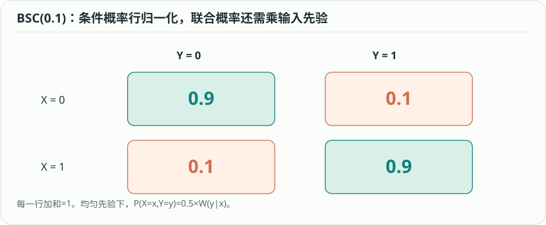
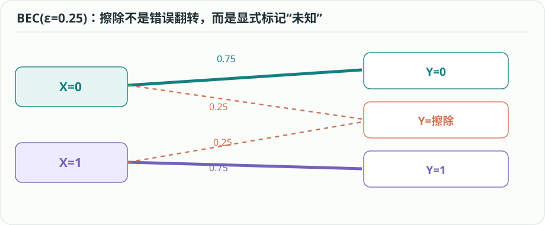
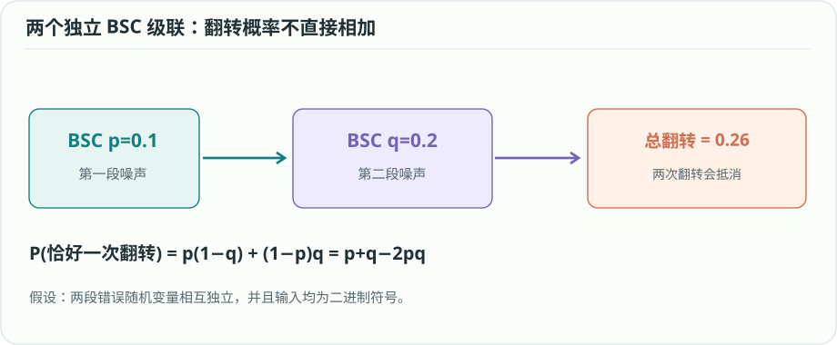

一次传输失败，意味着比特翻转还是接收端根本没看见？
数字通信中，“发出了 0 却收到了 1”与“发出了 0、接收端只知道此符号丢失”是两类不同的噪声。前者是错误（error），后者是擦除（erasure）。两者的译码策略不同：如果知道哪个位置丢失，通常比不知道错误在哪里更容易恢复。
离散信道不直接模拟电磁波，而是把从输入符号到输出符号的随机映射抽象为条件分布。于是可以从具体错误模型开始讨论“在噪声存在时还知道多少关于输入的信息”。
转移矩阵：每一行都是条件概率分布
若 X 是发送符号、Y 是接收符号，则 W(y|x)=P(Y=y|X=x) 定义信道转移概率。每一行对应一个固定输入 x，在所有可能输出 y 上求和为 1。信道本身不指定发送方使用哪种输入概率 p(x)。

例如，若输入均匀，p(0)=p(1)=0.5，则四个联合概率是 0.45、0.05、0.05、0.45。若发送方几乎只发 0，转移矩阵不变，但联合分布与接收端获得的信息会变化。
BSC：只有一个翻转参数 ε
二元对称信道 BSC(ε) 的输出满足 Y=X⊕N，其中 N∼Bernoulli(ε)，且 N 与输入 X 独立。N=1 时翻转，N=0 时保留。矩阵是：
当 ε=0 时信道无错误；当 ε=0.5 时每次输出都像独立公平硬币，输入的信息完全丢失；ε=1 时每个比特必定翻转，但接收端可以按位翻回，信道仍然是确定且可逆的。
展示的 I(X;Y) 仅对应均匀输入；这个 BSC 因对称性恰好在均匀输入时取得容量。
BEC：擦除事件本身不伪装成另一个比特
二元擦除信道 BEC(ε) 有三个输出符号 0、1、⊥。输入 x 以 1−ε 的概率正确到达，以 ε 的概率变成擦除标记 ⊥，绝不会翻转成 1−x。

若 X 为公平输入，输出未被擦除的比例是 1−ε；给定未擦除的 Y，X 完全已知；给定擦除标记则 X 仍有 1 bit 不确定性。因此 H(X|Y)=ε，I(X;Y)=1−ε。这个计算依赖均匀输入；更一般的输入下 I(X;Y)=(1−ε)H(X)。
级联信道：为什么两次错误可以相互抵消？
若两个独立 BSC 噪声 N₁∼Bernoulli(p)、N₂∼Bernoulli(q)，输出为 Z=X⊕N₁⊕N₂。只有发生奇数次翻转才是错误，所以等效翻转率为 p(1−q)+(1−p)q。

信道、输入分布与互信息是三层不同对象
固定转移矩阵 W 以后，还必须选择输入分布 p(x)，才能计算输出分布 p(y)=∑ₓp(x)W(y|x)。互信息 I(X;Y)=H(Y)−H(Y|X) 可以衡量给定输入策略传递了多少信息。下一章讨论对所有输入分布取最大值——这才是信道容量。
from examples.channel_coding import bsc_matrix, cascade_bsc, mutual_information
W = bsc_matrix(0.1)
assert W == ((.9, .1), (.1, .9))
assert abs(mutual_information((.5,.5),W)-0.5310044) < 1e-6
assert abs(cascade_bsc(.1,.2)-.26) < 1e-12模型边界与错误的直觉
若实际信道有记忆，连续两次错误可能相关，便不满足简单的无记忆假设。若擦除标记本身不可靠，不能直接将其建模为标准 BEC。若噪声依赖所发的 0 或 1，模型可能不对称，容量最优的输入也未必均匀。
来源与延伸阅读
- MIT 6.441 (2010)，Lecture 8：二元对称与二元擦除信道模型。
- MIT 6.441 (2016)，DMC、容量与互信息章节：转移概率及符号约定。
- Shannon (1948), A Mathematical Theory of Communication：带噪通信的概率模型。